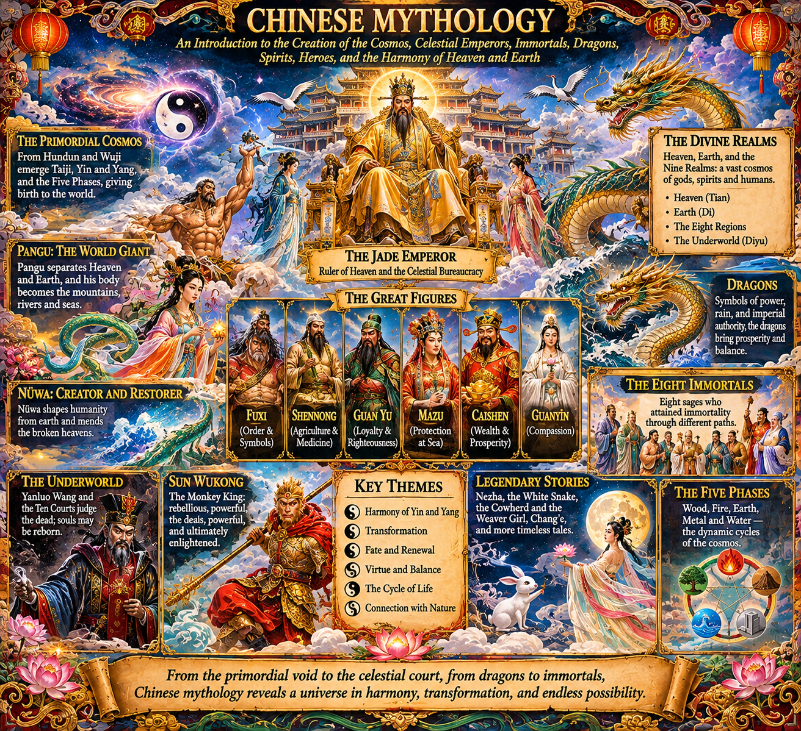

Chinese Mythology

CHINESE MYTHOLOGY
An Introduction to the Creation of the Cosmos, Celestial Emperors, Immortals, Dragons, Spirits, Heroes, and the Harmony of Heaven and Earth
Chinese mythology is one of the world's oldest and most expansive mythological traditions. It developed over thousands of years across different regions, dynasties, religious movements, literary traditions, and local cultures.
Unlike mythological systems that are often presented through a single pantheon or one canonical creation narrative, Chinese mythology is a layered collection of stories and beliefs. Its figures and cosmologies come from ancient oral traditions, classical literature, Daoism, Buddhism, Confucian culture, folk religion, historical legend, and popular storytelling.
Its universe is populated by primordial beings, celestial rulers, dragon kings, mountain spirits, ghosts, immortals, demons, legendary rulers, and ordinary humans who sometimes become extraordinary through wisdom, virtue, cultivation, or supernatural intervention.
One recurring idea is that the cosmos is an interconnected system. Heaven, Earth, humanity, ancestors, spirits, and nature participate in a larger order. The universe is not necessarily governed by one omnipotent creator. Instead, it is often described as emerging from primordial unity, differentiating into complementary forces, and developing into an intricate structure of relationships.
Chinese mythology is also deeply concerned with transformation. A person may become an immortal. An animal may acquire supernatural power. A mountain may house a deity. A spirit may become a protector. A mortal may challenge Heaven.
The following guide introduces the major traditions and stories while distinguishing between different versions rather than pretending they all belong to one uniform mythology.
- BEFORE CREATION: HUNDUN, WUJI, AND THE PRIMORDIAL STATE
Chinese cosmological traditions contain several different ways of describing what existed before the ordered universe.
There is no single universally accepted Chinese creation account.
Hundun — Primordial Undifferentiation
Hundun is often translated as chaos, primordial confusion, or undifferentiated existence.
It represents a condition in which the distinctions that characterize the familiar world have not yet emerged.
In one famous story from the Zhuangzi, Hundun is personified as a ruler who has no ordinary sensory openings. Two other rulers attempt to reward him by drilling openings for eyes, ears, nostrils, and a mouth. They create one opening each day, and on the seventh day Hundun dies.
This strange story is philosophical rather than a conventional creation myth. It questions whether imposing familiar structures upon an original state of existence can destroy the very thing one intends to improve.
Wuji — The Limitless
Wuji refers to the limitless or undifferentiated state before the emergence of differentiated polarity.
It is associated with philosophical descriptions of the origin of the cosmos, particularly in later interpretations of Daoist and Neo-Confucian cosmology.
Taiji — The Supreme Ultimate
Taiji is the Supreme Ultimate, associated with the emergence of the complementary forces of yin and yang.
In the Taijitu shuo, or Explanation of the Diagram of the Supreme Ultimate, the philosopher Zhou Dunyi describes a cosmological sequence in which the Supreme Ultimate generates movement and stillness, giving rise to yin and yang.
From their interaction emerge the Five Phases, and through their transformations the multiplicity of the world develops.
This is a philosophical cosmology, not a literal myth about a humanoid god creating the universe.
Yin and Yang
Yin and yang are complementary modes of existence.
Yin is commonly associated with darkness, coolness, rest, inwardness, receptivity, and the shaded side of a landscape.
Yang is associated with light, warmth, activity, outwardness, and the sunlit side.
Neither is inherently evil or good.
They are relational and mutually dependent. Each contains the possibility of the other, and their interaction produces change.
The familiar black-and-white circular symbol is called the taijitu.
Yin and yang are not simply two substances fighting for dominance. They are a way of understanding patterns, transitions, and balance within a changing world.
- PANGU: THE GIANT WHO SEPARATED HEAVEN AND EARTH
One of the most famous Chinese creation stories concerns Pangu.
In a commonly told version, the universe originally existed as a cosmic egg containing an undifferentiated mixture of forces.
Pangu emerged within it.
For eighteen thousand years, Pangu grew inside the egg. Eventually, he separated the lighter, clearer elements from the heavier, denser elements.
The lighter elements rose and became Heaven. The heavier elements descended and became Earth.
Pangu stood between them, holding Heaven above and pressing Earth below.
He continued growing, preventing the two from collapsing back together.
After an immense period of time, Pangu died.
His body transformed into the features of the world.
Different versions vary, but the transformation is often described in terms such as:
- His breath became wind and clouds.
- His voice became thunder.
- His left eye became the sun.
- His right eye became the moon.
- His limbs became mountains.
- His blood became rivers.
- His veins became roads and valleys.
- His muscles became fertile land.
- His hair became plants and trees.
- His bones became minerals and stone.
- His sweat became rain.
- The creatures inhabiting the world emerged from his body or from its associated transformations.
Pangu's story shares a broad motif with other world-body creation traditions: the ordered environment is formed from the transformation of a primordial being.
The cosmos is not constructed from unrelated materials. It is the transformed remains of an original living totality.
The historical context
The Pangu story is not one of the oldest securely documented Chinese creation accounts. Its surviving literary attestations appear in texts from the early medieval period, although the tradition may have older oral roots.
It is useful to recognize that the story is one major Chinese creation narrative, not the only one.
- NÜWA: THE CREATOR AND RESTORER OF HUMANITY
Nüwa is one of the most important figures in Chinese mythology.
She is associated with creation, humanity, fertility, protection, and the repair of the cosmos.
In some representations, she has a human upper body and a serpent-like lower body. She is often paired with Fuxi.
The creation of humanity
According to a famous story, Nüwa shaped human beings from yellow earth.
She formed individual figures by hand.
The story also describes how she eventually became tired of making every person individually and used a rope dipped in mud to scatter droplets across the ground. These droplets became additional people.
Different versions use this story to explain social distinctions, including the origin of different classes of people. Such explanations belong to the historical mythology and social imagination of their periods, not to modern biological history.
The catastrophe of the broken heavens
Another famous story describes a catastrophe that damages the structure of the cosmos.
The pillars supporting Heaven are damaged. The sky tilts, the earth fractures, fires and floods devastate the land, and monstrous creatures threaten humanity.
Nüwa gathers five-colored stones and melts them to repair the sky.
She cuts off the legs of a giant turtle and uses them as replacement supports.
She also defeats or restrains dangerous creatures and restores the conditions necessary for life.
Nüwa's role is therefore not limited to creating humanity. She repairs a damaged world.
She is a powerful symbol of restoration after cosmic disorder.
- FUXI: THE CULTURAL HERO AND ORDER OF SYMBOLS
Fuxi is a legendary culture hero often paired with Nüwa.
He is associated with the beginnings of civilization, social order, fishing, hunting, animal husbandry, and the development of symbolic systems.
He is traditionally credited with establishing the Eight Trigrams, or Bagua.
The trigrams are combinations of broken and unbroken lines representing patterns of change.
They are associated with the Yijing, or Book of Changes, one of the most influential texts in Chinese intellectual history.
The Eight Trigrams are:
- Qian: Heaven.
- Kun: Earth.
- Zhen: Thunder.
- Xun: Wind or wood.
- Kan: Water.
- Li: Fire.
- Gen: Mountain.
- Dui: Lake or marsh.
These symbols can be arranged into different systems and used to interpret relationships, changes, and situations.
The traditional attribution of the trigrams to Fuxi is mythological and legendary. The historical development of the Yijing was more complicated and took place over many centuries.
Fuxi represents the transformation of natural observation into cultural knowledge.
- SHENNONG: THE DIVINE FARMER
Shennong, whose name means Divine Farmer, is another great culture hero.
He is associated with agriculture, medicine, herbal knowledge, and the development of practical civilization.
He is traditionally credited with teaching humanity how to cultivate crops and understand the properties of plants.
One famous story says he tasted hundreds of herbs to discover their medicinal and poisonous properties.
He is sometimes said to have tasted many dangerous substances and suffered repeated poisonings.
His mythology expresses the importance of experimentation, agricultural knowledge, and the relationship between humans and the natural world.
Shennong is also associated with the development of traditional Chinese medicine.
The legendary attribution of medical knowledge to him should not be confused with the actual historical development of Chinese medical traditions, which involved many practitioners and texts over long periods.
- THE THREE SOVEREIGNS AND FIVE EMPERORS
The Three Sovereigns and Five Emperors are legendary rulers associated with the distant origins of Chinese civilization.
The lists differ between historical and literary sources.
Commonly named Three Sovereigns include:
- Fuxi.
- Nüwa.
- Shennong.
Other versions substitute or include figures such as the Heavenly Sovereign, Earthly Sovereign, and Human Sovereign.
The Five Emperors are often identified as:
- Huangdi: The Yellow Emperor.
- Zhuanxu: Associated with ordering Heaven and Earth.
- Ku: A legendary ruler associated with dynastic ancestry.
- Yao: A model of benevolent rulership.
- Shun: Another exemplary ruler known for virtue and filial conduct.
These figures occupy the boundary between mythology, political philosophy, and legendary history.
They are not all necessarily intended as literal historical individuals in the modern sense.
Huangdi — The Yellow Emperor
Huangdi is among the most important legendary rulers in Chinese tradition.
He is associated with the origins of Chinese civilization, medicine, warfare, technology, writing, and political order.
Many inventions and cultural achievements were later attributed to him or members of his court.
The Huangdi Neijing, or Yellow Emperor's Inner Canon, is a foundational work in the history of Chinese medicine. Its title associates the text with Huangdi, but its actual composition developed over time.
Huangdi is also connected with the mythological conflict against Chiyou.
Yao and Shun
Yao and Shun are celebrated as exemplary rulers who governed through virtue rather than merely through force.
Their stories became important in Confucian political philosophy.
They represent the idea that legitimate authority depends on moral conduct and the welfare of the people.
- THE JADE EMPEROR AND THE CELESTIAL BUREAUCRACY
The Jade Emperor, Yuhuang Dadi, is one of the most recognizable deities in popular Chinese religion.
He is commonly depicted as a supreme ruler of Heaven, presiding over a celestial administration.
His court contains officials, generals, judges, record keepers, spirits, and deities responsible for different aspects of the world.
This structure resembles an imperial government.
The celestial bureaucracy reflects the importance of administrative organization in Chinese political culture.
Heaven is not simply a distant place where gods live. It is a governing institution with ranks, responsibilities, procedures, rewards, and punishments.
The Jade Emperor's position
The Jade Emperor is frequently treated as the supreme ruler of the celestial realm in popular religion and later literary traditions.
However, Chinese cosmology is not uniform. In some Daoist theological systems, the Three Pure Ones occupy a higher theological position than the Jade Emperor.
The Jade Emperor is therefore not universally the absolute highest principle of every Chinese religious tradition.
The celestial administration
Different gods and spirits may govern:
- Rain and weather.
- Rivers and oceans.
- Mountains and forests.
- Household welfare.
- Wealth and prosperity.
- Birth and longevity.
- Disease and healing.
- Warfare.
- The dead and the underworld.
- The movement of stars and celestial bodies.
Many deities have administrative ranks or official titles.
This creates a universe in which supernatural authority is distributed through an organized network.
- THE THREE PURE ONES: DAOIST COSMIC DIVINITIES
The Three Pure Ones, Sanqing, are among the highest divine figures in Daoist religious traditions.
They represent profound dimensions of Daoist cosmology and the manifestation of the Dao.
Their identities and interpretations developed over time.
The commonly recognized Three Pure Ones are:
- Yuanshi Tianzun — The Heavenly Worthy of Primordial Beginning
Associated with primordial origin, cosmic emergence, and the beginning of the manifested universe.
- Lingbao Tianzun — The Heavenly Worthy of Numinous Treasure
Associated with cosmic order, sacred teachings, and the transmission of divine principles.
- Daode Tianzun — The Heavenly Worthy of the Way and Its Virtue
Often identified with the deified Laozi, associated with the Dao and its operation.
The Three Pure Ones are not simply three gods with separate physical responsibilities. They represent theological principles within a complex religious system.
Daoism itself has philosophical and religious dimensions. These should not be collapsed into one another, although they have influenced each other throughout history.
- THE MAJOR GODS AND DEITIES
Chinese mythology and religion contain a vast number of deities. The following are among the best-known figures.
Guanyin — Bodhisattva of Compassion
Guanyin is one of the most widely venerated figures in Chinese Buddhism and popular religion.
The name is associated with perceiving the cries or sounds of the world.
Guanyin is a bodhisattva associated with compassion and the relief of suffering.
Although Guanyin originates in the Buddhist tradition of Avalokiteśvara, the figure developed distinct forms and stories in East Asia.
Guanyin is frequently depicted as a serene figure dressed in white, sometimes holding a vase containing pure water or a willow branch.
In Chinese popular devotion, Guanyin is often associated with protection, mercy, healing, and assistance in times of danger.
Guan Yu — God of War and Loyalty
Guan Yu was a historical military general from the late Han dynasty.
He became one of the most celebrated figures in Chinese history and literature.
In the Romance of the Three Kingdoms, he is portrayed as a paragon of loyalty, righteousness, courage, and martial ability.
Over time, he became deified and is worshipped in different contexts as a god of war, loyalty, protection, and righteousness.
His image is recognizable through his long beard, green robe, and great weapon, the Green Dragon Crescent Blade.
Guan Yu demonstrates how a historical person can become a mythological and religious figure.
Mazu — Goddess of the Sea
Mazu is a protective deity associated with sailors, fishermen, and maritime travel.
Her origins are connected with a historical woman named Lin Moniang, traditionally associated with Fujian during the Song period.
Stories describe her as possessing extraordinary knowledge and supernatural abilities, protecting people at sea.
Her worship spread widely through coastal communities and overseas Chinese populations.
Mazu represents the importance of the sea in Chinese history, trade, migration, and survival.
Caishen — God of Wealth
Caishen is a widely worshipped deity associated with prosperity and financial success.
Different traditions identify different figures with Caishen.
He is especially important during Lunar New Year celebrations, when people welcome prosperity for the coming year.
Shouxing — God of Longevity
Shouxing is associated with long life and good fortune.
He is often represented as an elderly figure with a prominent forehead, carrying a staff and a peach.
The peach is a recurring symbol of longevity and immortality.
Fuxing and Luxing — Fortune and Prosperity
Together with Shouxing, Fuxing and Luxing form the Three Star Gods, collectively known as Fu, Lu, Shou.
They represent happiness or good fortune, prosperity or status, and longevity.
Their imagery is commonly found in homes, temples, decorations, and New Year celebrations.
Zao Jun — The Kitchen God
Zao Jun is a household deity associated with the kitchen and family life.
In popular tradition, he observes the household throughout the year and reports the family's conduct to Heaven.
Families may offer food or other gifts to him before his annual journey, seeking a favorable report.
His story illustrates how even the smallest domestic space can have a place within the larger celestial administration.
Chenghuang — City Gods
Chenghuang are protective deities associated with cities and local communities.
They can function as supernatural administrators who oversee the spiritual welfare of a particular region.
Their temples reflect the relationship between local government, community identity, and religious life.
- DRAGONS: THE GREAT POWERS OF WATER AND HEAVEN
Chinese dragons, long, are among the most recognizable creatures in Chinese mythology.
They are not equivalent to the fire-breathing dragons of many European legends.
Chinese dragons are often associated with water, rain, rivers, clouds, storms, fertility, imperial authority, and auspicious power.
They can be benevolent, dangerous, unpredictable, or majestic.
They are frequently depicted with elongated serpentine bodies, scales, horns, whiskers, claws, and the ability to move through the air or water.
The Dragon Kings
The Dragon Kings are powerful rulers of bodies of water.
They govern seas, rivers, and other aquatic regions.
The Four Dragon Kings are traditionally associated with the four directions:
- Ao Guang: Eastern Sea.
- Ao Qin: Southern Sea.
- Ao Run: Western Sea.
- Ao Shun: Northern Sea.
Their names and descriptions vary across traditions and literary works.
They can command rain, storms, floods, and aquatic creatures.
They possess underwater palaces and courts populated by supernatural beings.
The Yellow Dragon
The Yellow Dragon is associated with the center, imperial symbolism, and auspicious power.
The color yellow has historically been associated with the imperial center and certain cosmological arrangements.
The Azure Dragon
The Azure Dragon, Qinglong, is one of the Four Symbols associated with the cardinal directions.
It represents the east and is connected with spring and the Wood phase in traditional correspondences.
Dragons and imperial authority
The dragon became a major symbol of imperial sovereignty.
The emperor was traditionally associated with the celestial mandate and could be represented through dragon imagery.
The dragon's power therefore operated at several levels: natural, cosmic, political, and spiritual.
- THE FOUR SYMBOLS AND THE COSMIC DIRECTIONS
The Four Symbols are four mythological creatures associated with the directions, seasons, and cosmological order.
Azure Dragon of the East: Associated with spring, wood, and renewal.
Vermilion Bird of the South: Associated with summer, fire, and brightness.
White Tiger of the West: Associated with autumn, metal, and martial power.
Black Tortoise of the North: Associated with winter and water. It is often depicted together with a snake.
These figures are associated with traditional cosmology, astronomy, ritual, and geomancy.
They should not be confused with the Four Great Auspicious Beasts in every tradition, nor treated as one universally fixed set of gods.
The Four Symbols are part of a broader system in which directions, seasons, colors, elements, and celestial patterns correspond to one another.
- THE FIVE PHASES: WU XING
The Five Phases are a major component of Chinese cosmological thought.
They are:
- Wood: Growth, expansion, spring, and renewal.
- Fire: Heat, activity, summer, and transformation.
- Earth: Stability, transition, nourishment, and the center.
- Metal: Structure, contraction, autumn, and refinement.
- Water: Cold, storage, winter, and descent.
They are commonly translated as the Five Elements, but the term Five Phases is often more accurate because they describe processes and relationships rather than five immutable substances.
Two important cycles are traditionally described.
The generating cycle
- Wood feeds Fire.
- Fire produces Earth or ash.
- Earth bears Metal.
- Metal enriches or gives rise to Water in traditional correspondences.
- Water nourishes Wood.
The overcoming cycle
- Wood overcomes Earth.
- Earth contains or dams Water.
- Water extinguishes Fire.
- Fire melts Metal.
- Metal cuts Wood.
These cycles are used in traditional Chinese medicine, calendrical systems, philosophy, music theory, feng shui, and other historical disciplines.
The Five Phases are not modern chemistry. They are a symbolic and relational framework for describing patterns of transformation.
- THE EIGHT IMMORTALS
The Eight Immortals, Baxian, are a famous group of legendary figures associated with Daoist immortality.
They represent different social backgrounds, personalities, and methods of attaining extraordinary power.
They are commonly depicted crossing the sea or traveling together.
Their individual stories are numerous, and their membership is traditionally stable in popular depictions, although particular details differ.
- Lü Dongbin
A scholar and swordsman associated with wisdom, poetry, and spiritual cultivation.
He often carries a sword capable of destroying ignorance or evil influences.
- Li Tieguai
A strange and powerful immortal who is often depicted with an iron crutch and a gourd.
His appearance is frequently that of a beggar with a damaged leg.
Stories describe him leaving his body during spiritual travel and returning to discover that his original body had been cremated or destroyed, forcing him to inhabit another form.
- He Xiangu
The only woman among the standard Eight Immortals.
She is often depicted carrying a lotus or another auspicious object.
She is associated with purity, spiritual insight, and healing.
- Zhang Guolao
An eccentric elderly immortal often depicted riding a white donkey backward.
He carries a bamboo tube or drum-like instrument.
His stories involve strange abilities, humor, and the refusal to conform to ordinary expectations.
- Lan Caihe
An ambiguous and unconventional figure often depicted in clothing associated with a wandering performer.
Lan Caihe is sometimes portrayed as gender-ambiguous.
The figure is associated with music, freedom, and detachment from conventional wealth.
- Han Xiangzi
A musician and scholar associated with the flute.
He represents artistic cultivation and the transformation of ordinary life into spiritual expression.
- Cao Guojiu
A figure associated with the imperial court.
He is often depicted carrying castanets or a jade tablet.
His story involves rejecting worldly privilege and seeking spiritual refinement.
- Han Zhongli
An older immortal often depicted with a fan.
He is associated with alchemy, transformation, and the restoration of life.
The symbolism of the Eight Immortals
The Eight Immortals are not all identical spiritual beings. Their differences are part of their appeal.
They represent the possibility of transcendence through different paths, personalities, disciplines, and experiences.
Their stories also became popular subjects in opera, painting, sculpture, literature, and festivals.
- THE UNDERWORLD: DI YU AND THE TEN COURTS OF HELL
Chinese traditions contain elaborate descriptions of the underworld.
The underworld is commonly called Diyu.
It is not necessarily identical to the Christian Hell. It is a supernatural judicial system in which the dead are examined, judged, and assigned consequences or further destinations.
The underworld is frequently described as a bureaucracy.
Yanluo Wang — King Yama
Yanluo Wang is the Chinese development of Yama, a deity of death and judgment whose origins lie in Indian religious traditions.
He presides over the dead and is associated with judgment and punishment.
In many popular descriptions, he is one of the Ten Kings of Hell.
The Ten Courts
The Ten Kings preside over different stages or courts of judgment.
The details differ between texts and popular religious traditions, but the overall system commonly involves an examination of a person's deeds and the consequences of those deeds.
Punishments may be assigned according to particular offenses.
These stories frequently reflect the influence of Buddhist karma, Chinese legal imagery, and popular moral instruction.
The Book of Life and Death
The underworld is sometimes represented as maintaining records of the lifespan and deeds of living people.
This gives the supernatural bureaucracy an extraordinary administrative role.
Death is not simply disappearance. It is an accounting, transition, and judgment.
Meng Po — The Lady of Forgetfulness
Before reincarnation, souls may encounter Meng Po.
She prepares a special soup that causes them to forget their previous lives.
The soup is sometimes described as the means by which souls lose their memories before returning to the world.
This story gives reincarnation a psychological boundary: the new life begins without ordinary conscious memory of the old one.
The Bridge of Forgetfulness
The Bridge of Forgetfulness is associated with the transition between the underworld and rebirth.
Its imagery appears in popular descriptions of the journey of the dead.
- GHOSTS, HUNGRY GHOSTS, AND SPIRIT BEINGS
Chinese mythology and folk religion contain many different categories of spirits.
Gui — Ghosts
Gui is a general term for ghosts or spirits of the dead.
Some are harmless or protective, while others are restless, dangerous, or troubled.
The treatment of the dead is deeply connected with ancestor veneration and ritual obligations.
Egui — Hungry Ghosts
Hungry ghosts are associated with insatiable desire, deprivation, and suffering.
In Buddhist traditions, they are often called pretas.
They may be depicted with enormous stomachs and tiny mouths or throats, symbolizing an inability to satisfy their hunger.
The Hungry Ghost Festival is associated with rituals intended to provide offerings and relief to wandering spirits.
Jiangshi — The Hopping Corpse
The jiangshi is a supernatural reanimated corpse popular in Chinese folklore.
It is commonly depicted with stiff limbs, a rigid posture, and clothing associated with earlier historical periods.
The creature is frequently shown hopping because its body cannot move naturally.
Stories associate jiangshi with the absorption of life energy, corpse transportation, improper burial, and supernatural contamination.
The modern cinematic image of the jiangshi developed through later folklore, literature, and film.
Huli Jing — Fox Spirits
Fox spirits are supernatural beings that can acquire extraordinary power through age, cultivation, and transformation.
They may appear as beautiful people, tricksters, lovers, protectors, or dangerous spirits.
The relationship between fox spirits and humans is often complicated.
Some are benevolent; others are deceptive or predatory.
The nine-tailed fox is an especially famous form.
Yaoguai — Supernatural Monsters
Yaoguai is a broad term for strange or monstrous beings, often associated with animals, plants, objects, or natural forces that acquire supernatural properties.
They can become intelligent, transform into human shapes, cultivate spiritual power, and interact with human society.
They are not always evil. Their intentions vary.
- SUN WUKONG: THE MONKEY KING
Sun Wukong is one of the most famous characters in all Chinese literature.
He is the central figure in the sixteenth-century novel Journey to the West, attributed to Wu Cheng'en.
His story combines mythology, Buddhist pilgrimage, Daoist cultivation, comedy, adventure, and spiritual allegory.
Birth from stone
Sun Wukong emerges from a magical stone on the Mountain of Flowers and Fruit.
He quickly becomes the leader of the monkeys.
He discovers the Water Curtain Cave and establishes himself as the Monkey King.
The pursuit of immortality
Wukong seeks freedom from death.
He travels to learn supernatural techniques from a Daoist master, acquiring extraordinary abilities.
His powers include:
- Seventy-two transformations.
- Cloud somersaulting.
- Extraordinary strength.
- Immense agility.
- Resistance to many forms of injury.
- The ability to create copies of himself from his hair.
His weapon is the Ruyi Jingu Bang, a magical staff that can change size and weight.
Defying Heaven
Wukong becomes dissatisfied with the position granted to him by the celestial bureaucracy.
He declares himself the Great Sage Equal to Heaven.
He disrupts the celestial administration, steals the peaches of immortality, consumes divine wine, and swallows Laozi's alchemical pills.
The heavenly authorities attempt to subdue him.
Even after being captured and subjected to execution attempts, Wukong survives.
Laozi eventually places him inside an alchemical furnace, but Wukong emerges with even greater powers.
The Buddha's challenge
Sun Wukong's rebellion is eventually stopped by the Buddha.
Wukong boasts that he can escape the Buddha's palm.
He leaps to what appears to be the edge of the universe and finds enormous pillars marking the boundary.
He writes his name on one pillar.
But the pillars are actually the Buddha's fingers.
The Buddha traps Wukong beneath a mountain.
The pilgrimage
Wukong is eventually released under the condition that he accompany the monk Xuanzang on a journey to India to retrieve Buddhist scriptures.
He becomes the monk's protector.
The journey is filled with demons, spirits, supernatural trials, and moral challenges.
Wukong's strength and intelligence are essential, but his impulsiveness and pride must be disciplined.
His journey is therefore both an adventure and a process of transformation.
- THE FOUR GREAT CLASSICAL NOVELS AND THEIR MYTHOLOGICAL WORLDS
Chinese mythology is closely connected with classical literature.
Four novels are particularly influential.
Journey to the West
A supernatural adventure about the monk Xuanzang and his companions traveling to India to obtain Buddhist scriptures.
It features Sun Wukong, Zhu Bajie, Sha Wujing, demons, immortals, bodhisattvas, and celestial officials.
It is one of the richest sources for popular Chinese mythological imagery.
Investiture of the Gods — Fengshen Yanyi
A mythological novel describing the transition from the Shang dynasty to the Zhou dynasty.
It features gods, immortals, demons, magical weapons, divine interventions, and large-scale supernatural warfare.
The novel is associated with figures such as Jiang Ziya, Nezha, and the celestial organization of divine offices.
It presents an enormous mythological world in which historical dynastic change becomes a cosmic conflict.
Romance of the Three Kingdoms
A historical novel based on the turbulent end of the Han dynasty and the Three Kingdoms period.
It includes famous figures such as Liu Bei, Cao Cao, and Guan Yu.
Although not primarily a supernatural mythology, it profoundly shaped the legendary status of historical figures and their later religious and cultural representations.
Water Margin
A novel about a group of outlaws and rebels who gather at Liangshan Marsh.
It contains martial heroes, supernatural motifs, and legendary personalities.
It is not a creation myth or pantheon, but it contributes to the broader mythic imagination of Chinese heroic literature.
- NEZHA: THE DIVINE CHILD WARRIOR
Nezha is a powerful mythological figure who appears prominently in Investiture of the Gods and other traditions.
He is often portrayed as a youthful warrior with extraordinary powers.
His iconic equipment includes:
- The Wind Fire Wheels, which allow him to travel rapidly.
- The Universe Ring, a powerful weapon.
- The Red Armillary Sash, a magical binding weapon.
- The Fire-tipped Spear.
His birth
In a famous version, Nezha is born after an unusually long pregnancy.
He emerges as a supernatural child with extraordinary abilities.
His father is Li Jing, a military commander.
Conflict with the Dragon King
Nezha encounters a Dragon King's son and kills him in a conflict.
The Dragon King demands retribution.
The dispute escalates into a threat against Nezha's family and community.
Nezha eventually sacrifices himself to protect his parents.
Rebirth
Nezha is later restored to life through supernatural intervention, often associated with a lotus body.
His return is an extraordinary transformation: death does not end his story, but changes the form in which he exists.
Nezha represents rebellion, filial obligation, sacrifice, and the possibility of renewal.
- THE LEGEND OF THE WHITE SNAKE
The Legend of the White Snake is one of China's most famous romantic and supernatural stories.
It concerns a white snake spirit named Bai Suzhen who transforms into a woman and falls in love with a human man named Xu Xian.
Her companion is the Green Snake, Xiaoqing.
The romance
Bai Suzhen and Xu Xian meet and fall in love.
They marry and attempt to live a human life.
However, the Buddhist monk Fahai believes their relationship violates the boundary between humans and supernatural beings.
He intervenes.
The confrontation
Fahai attempts to separate the couple and contain Bai Suzhen.
The story develops into a conflict involving supernatural power, love, social order, and the limits placed upon different forms of existence.
In some versions, Bai Suzhen is imprisoned beneath Leifeng Pagoda.
The deeper themes
The legend explores:
- Love across the human-supernatural boundary.
- The relationship between desire and spiritual discipline.
- The conflict between social order and personal freedom.
- Transformation and identity.
- The consequences of prejudice and fear.
The story has been retold in opera, literature, television, film, and modern adaptations.
- THE COWHERD AND THE WEAVER GIRL
The Cowherd and the Weaver Girl is a famous love story associated with the stars Vega and Altair.
The Weaver Girl is associated with the celestial realm, while the Cowherd is a mortal.
They fall in love and marry.
Their relationship eventually violates the rules of Heaven.
The celestial authorities separate them with the Milky Way.
They are allowed to meet only once each year, on the seventh day of the seventh lunar month.
Magpies are said to form a bridge across the celestial river so that the lovers can reunite.
The story is associated with the Qixi Festival.
It is a story about love, separation, cosmic order, and the tension between personal desire and celestial authority.
- CHANG'E AND THE MOON
Chang'e is the goddess or immortal associated with the Moon.
Her story is connected with the legendary archer Hou Yi.
Hou Yi and the ten suns
In one famous story, ten suns appear in the sky simultaneously.
The heat devastates the earth.
Hou Yi uses his extraordinary bow to shoot down nine of them, leaving one sun to illuminate the world.
He saves humanity from destruction.
The elixir of immortality
Hou Yi receives an elixir of immortality.
In a widely known version, Chang'e consumes it and ascends to the Moon.
The reasons vary across retellings. Some portray her as taking it to prevent it from being stolen; others present different circumstances.
She becomes associated with the Moon and lives there, often accompanied by the Jade Rabbit.
The Moon Rabbit
The Jade Rabbit is a companion of Chang'e.
It is traditionally depicted pounding ingredients with a mortar and pestle, sometimes preparing an elixir of immortality.
The Moon Rabbit is a recurring image in East Asian folklore and lunar symbolism.
The Mid-Autumn Festival is strongly associated with Chang'e, the Moon, family reunion, and mooncakes.
- THE GREAT FLOOD AND THE LEGEND OF YU THE GREAT
Flood mythology is particularly important in Chinese legendary history.
One of the most famous accounts concerns a catastrophic flood that threatens the land.
The legendary ruler Shun appoints Yu to control the waters.
Yu's father, Gun, had attempted to contain the flood using barriers, but the method failed.
Yu takes a different approach.
Rather than simply blocking the water, he organizes channels and drainage systems to guide it toward the sea.
He travels extensively, studying the landscape and coordinating the work.
Tradition says that he passed by his home three times without entering because he was occupied with controlling the flood.
Eventually, the waters are brought under control.
Yu becomes known as Yu the Great and is associated with the establishment of the Xia dynasty in traditional Chinese historical chronology.
The significance of Yu
Yu represents practical intelligence, persistence, public service, and the relationship between political legitimacy and the ability to protect the population.
The flood story is both a legendary account of early civilization and a political model of responsible leadership.
Its historical details remain debated, and the myth should not be treated as a fully verified account of one specific prehistoric flood.
- THE THREE GREAT TREASURES OF CULTIVATION
Chinese philosophical and religious traditions frequently describe cultivation as a process of refining the person.
One important Daoist framework concerns the Three Treasures:
- Jing: Essence.
- Qi: Vital energy or breath.
- Shen: Spirit or consciousness.
Different Daoist schools interpret these terms in different ways.
In internal alchemy, or neidan, they may be understood as dimensions of the practitioner's being that can be refined through disciplined practice.
The broad process is sometimes described as:
- Refining essence into qi.
- Refining qi into spirit.
- Refining spirit and returning to emptiness or the Dao.
This is not a single universal technique or doctrine. It is a family of religious and philosophical interpretations.
The Dao
Dao means the Way.
It is the fundamental principle or process through which existence unfolds.
In the Daodejing, the Dao is described as difficult to define or capture through ordinary language.
It is not simply a creator god.
It is the underlying way of things, the source and pattern of transformation.
Wu wei
Wu wei is often translated as non-action, but this can be misleading.
It refers to acting without forcing, struggling unnecessarily, or imposing artificial control against the natural tendencies of a situation.
It is not laziness.
It is the art of effective action through alignment with circumstances.
A skilled practitioner does not necessarily use more force. They understand the conditions and act at the appropriate moment.
- IMPORTANT SYMBOLS AND THEIR MEANINGS
Chinese mythology and cosmology use a rich symbolic vocabulary.
The dragon: Power, auspiciousness, rain, imperial authority, and transformation.
The phoenix (fenghuang): Harmony, virtue, prosperity, and auspicious order. It is not simply identical to the European phoenix.
The qilin: A mythical auspicious creature associated with benevolence, wisdom, and the appearance of virtuous rulers.
The tortoise: Longevity, endurance, and cosmic stability.
The peach: Immortality and long life.
The lotus: Purity, spiritual awakening, and the ability to emerge from muddy conditions without being defined by them.
The crane: Longevity, transcendence, and the immortal world.
The tiger: Strength, protection, and martial power.
The red color: Happiness, celebration, vitality, and good fortune.
The number eight: Prosperity and auspiciousness in many popular cultural contexts.
The number five: A major cosmological organizing principle associated with the Five Phases.
The taijitu: The relationship between yin and yang and the dynamic unity of complementary forces.
The Bagua: Eight trigrams representing patterns and relationships in the changing world.
These symbols are not interchangeable decorations. Their meanings depend on context, period, religious tradition, and use.
- CHINESE MYTHOLOGY AND THE HUMAN CONDITION
Chinese mythology contains several recurring philosophical themes.
Harmony rather than domination
Many Chinese cosmological traditions emphasize alignment with the larger patterns of existence rather than the absolute domination of nature.
The ideal is not necessarily to conquer the world, but to understand its processes and participate in them skillfully.
Transformation
A being may change its form, acquire knowledge, or move between categories of existence.
A fox may become a spirit. A mortal may become an immortal. A historical general may become a god.
Transformation is one of the defining features of the mythological world.
The relationship between Heaven, Earth, and humanity
Human beings are part of a larger cosmological system.
Their actions can affect their families, communities, ancestors, and relationship with Heaven.
The traditional concept of Tian, or Heaven, is especially important in discussions of moral authority and political legitimacy.
The Mandate of Heaven
The Mandate of Heaven, Tianming, is a political and cosmological principle.
It holds that legitimate rulership depends upon Heaven's authorization, which is associated with moral responsibility and the welfare of the people.
A ruler who becomes corrupt and oppressive may lose the Mandate.
This idea was historically used to explain dynastic change.
It does not mean that every political event was understood as a direct supernatural intervention. It provided a moral framework for thinking about authority and historical change.
Filial piety and ancestors
Respect for parents and ancestors is a major theme in Chinese cultural traditions.
Ancestor veneration connects living generations with the dead.
Family relationships are not limited to biological memory. They carry ritual, moral, and social obligations.
The balance of forces
Yin and yang, the Five Phases, and the cycles of nature provide frameworks for understanding change.
The world is not static. Balance is dynamic and must continually be maintained.
Wisdom and cultivation
Many stories portray spiritual development as a process of learning, discipline, self-knowledge, and transformation.
The immortal is not simply someone who lives forever. In Daoist traditions, immortality can represent an extraordinary transformation of the person and their relationship with the Dao.
The limits of authority
Sun Wukong challenges Heaven. Nezha challenges inherited expectations. The White Snake challenges the boundary between human and supernatural life.
These stories show that authority, identity, and cosmic order can become subjects of conflict.
- HISTORICAL SOURCES AND HOW TO STUDY CHINESE MYTHOLOGY
Chinese mythology survives through many kinds of sources.
No single book contains the entire tradition.
The Classic of Mountains and Seas — Shanhaijing
The Shanhaijing is one of the most important sources for ancient Chinese mythological geography.
It describes strange mountains, rivers, animals, plants, spirits, peoples, and supernatural beings.
It is an extraordinary catalogue of the mythological imagination.
Its layers were compiled over a long period, and it should not be read as one uniform document written by a single author.
The Songs of Chu — Chuci
The Chuci contains poetry associated with the ancient state of Chu.
The poem Heavenly Questions, or Tianwen, asks a remarkable series of questions about creation, mythology, celestial phenomena, and ancient history.
It is one of the most fascinating sources for the study of early Chinese mythological thought.
The Huainanzi
The Huainanzi is a philosophical and cosmological work compiled during the Han dynasty.
It contains discussions of natural processes, cosmology, political philosophy, and ancient mythological traditions.
It is especially valuable for understanding the relationship between mythology and early Chinese theories of the universe.
The Daodejing
The Daodejing is a foundational Daoist text traditionally attributed to Laozi.
It explores the Dao, virtue, non-forcing action, simplicity, and the relationship between the individual and the larger order of existence.
The Zhuangzi
The Zhuangzi is a major philosophical text associated with Daoist thought.
It contains stories, parables, humor, strange transformations, and philosophical challenges to ordinary assumptions.
Its Hundun story is a particularly important example of mythic imagery used for philosophical reflection.
The Yijing
The Yijing, or Book of Changes, is a foundational text of Chinese cosmological and divinatory thought.
It uses hexagrams composed of broken and unbroken lines to describe changing situations.
Its history is complex, and it should not be reduced to a simple fortune-telling manual.
Journey to the West
This novel is one of the great sources for popular Chinese supernatural mythology.
It brings together gods, demons, immortals, Buddhist figures, and heroic adventures.
Investiture of the Gods
This novel is a major source for popular depictions of divine warfare, immortals, magical weapons, and the organization of the celestial hierarchy.
Historical chronicles and ritual texts
Works such as the Shiji, or Records of the Grand Historian, preserve accounts of legendary rulers, dynastic origins, and ancient traditions.
Ritual texts also help explain how religious and cosmological concepts were used in practice.
- A CHRONOLOGICAL PATH THROUGH CHINESE MYTHOLOGY
A useful way to organize the enormous body of material is to follow the development of the cosmos and its inhabitants.
- Primordial undifferentiation: Hundun, Wuji, and the unformed cosmos.
- Cosmic differentiation: Taiji, yin and yang, and the Five Phases.
- Creation of the world: Pangu separates Heaven and Earth.
- Creation and restoration: Nüwa creates humanity and repairs the sky.
- Civilization begins: Fuxi establishes symbolic and cultural order.
- Agricultural knowledge: Shennong teaches farming and herbal knowledge.
- Legendary rulers: The Three Sovereigns and Five Emperors establish models of civilization.
- The celestial order: Jade Emperor, Daoist divinities, and the heavenly bureaucracy.
- The supernatural world: Dragons, spirits, immortals, ghosts, and demons.
- The underworld: Yanluo Wang, the Ten Courts, and the cycle of rebirth.
- The immortal tradition: The Eight Immortals and Daoist cultivation.
- The heroic tradition: Nezha, Hou Yi, Yu the Great, and other culture heroes.
- The great literary epics: Journey to the West and Investiture of the Gods.
- The continuing tradition: Festivals, local deities, ancestor rites, and popular storytelling.
This is a study sequence, not a claim that every tradition developed in exactly this order.
CONCLUSION: A UNIVERSE OF TRANSFORMATION
Chinese mythology presents a cosmos that is not simply created once and left to exist.
It is continually differentiated, organized, repaired, cultivated, governed, challenged, and transformed.
Pangu separates Heaven and Earth. Nüwa repairs the damaged sky. Fuxi gives humanity symbolic patterns. Shennong explores the properties of the natural world. The Jade Emperor presides over celestial administration. The dragons govern waters and weather. The immortals pursue extraordinary states of existence. Sun Wukong challenges the heavens and learns the limits of rebellion. The dead pass through judgment and transformation.
Its central images are not only gods and monsters, but processes:
- The emergence of distinction from undifferentiated existence.
- The interaction of complementary forces.
- The relationship between nature and civilization.
- The transformation of mortal beings.
- The maintenance of cosmic and social harmony.
- The possibility of renewal through cultivation and wisdom.
Where some mythologies emphasize a final battle between good and evil, many Chinese traditions emphasize the continuous negotiation of balance, order, relationship, and change.
The universe is not merely a stage upon which life happens. It is a living network of processes in which Heaven, Earth, humanity, ancestors, spirits, and nature remain connected.
From Hundun to Taiji, from Pangu to Nüwa, from the Dragon Kings to Sun Wukong, Chinese mythology is an immense exploration of how an ordered world emerges, how beings transform, and how harmony is continually sought within a universe that never stops changing.